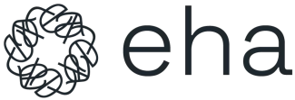
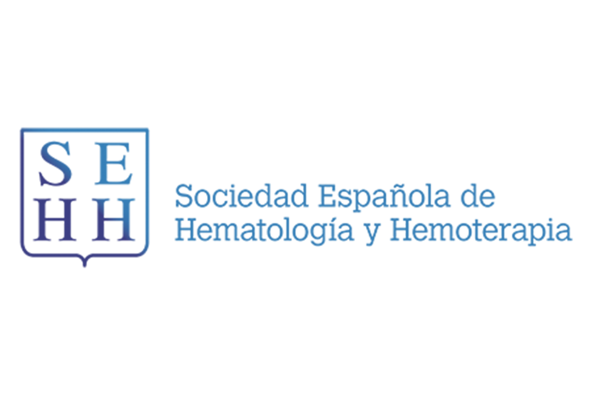
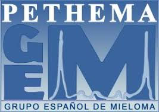
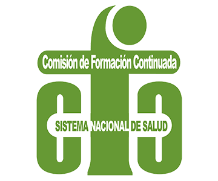

State of the Art in ADCs in Hematology
Secuenciación Óptima &
Manejo de Toxicidad
Configuración del algoritmo terapéutico de precisión, estrategias de rescate y manejo proactivo de toxicidades exclusivas de clase.
"Un ADC no es simple quimioterapia endovenosa; es bioingeniería de precisión que requiere comprender el perfilado exacto del anticuerpo y la toxicidad intracelular."
El reto de la secuenciación
en escenarios de Refractariedad.
Justificación Estratégica del Programa
Maximizando la Supervivencia Libre de Progresión.
Metodología UX y Certificación CFC.
Un entorno virtual de aprendizaje estructurado para garantizar la asimilación clínica profunda, basado exclusivamente en las publicaciones de *HemaSphere*.
-
school
Evaluación Formativa Continua
Cuestionarios interactivos (10 preguntas) al final de cada módulo con feedback fundamentado en la literatura de la EHA.
-
auto_stories
Estructura "State of the Art"
Arquitectura académica estricta: Executive Brief, Scientific Core, Critical Debate, Practice Inside y Clinical Cases.
-
bolt
Flexibilidad Asíncrona
Flujo de navegación estrictamente secuencial y adaptable al profesional médico con alta carga asistencial.

Fuente Científica ExclusivaObjetivos del Programa.
Capacitar al equipo multidisciplinar en el manejo seguro y humanizado de los Anticuerpos Conjugados.
Competencias Terapéuticas
Diseccionar la farmacodinámica de las distintas familias de ADCs, prediciendo el impacto de la estabilidad del linker y la citotoxicidad en el microambiente tumoral.
Algoritmos Clínicos
Configurar algoritmos de secuenciación para la integración de ADCs en recaída y refractariedad, analizando su papel frente a terapias celulares (CAR-T) y biespecíficos.
Habilidades Humanísticas
Identificar y manejar tempranamente toxicidades (queratopatía, SOS), integrar PROs y aplicar estrategias de prevención del distrés moral y burnout en el equipo.
Capacitación Multidisciplinar.
Dirigido al equipo de atención Onco-Hematológica.
Hematólogos Clínicos
Prescriptores clave. Obligatorio para la asimilación de algoritmos de secuenciación y comprensión del valor diferencial de cada mecanismo de acción.
Farmacia Hospitalaria
Actores imprescindibles ante la altísima complejidad galénica (reconstitución, interacciones) e impacto farmacoeconómico en comités.
Enfermería Onco-Hematológica
El motor ejecutor. De su pericia para implementar PROs y detectar toxicidades precoces depende el mantenimiento de la intensidad de la dosis.
Médicos Residentes (MIR)
Esenciales para fijar bases biológicas sólidas y cultivar tempranamente habilidades humanísticas que sostendrán su viabilidad profesional.
El Currículum Científico.
3 Módulos de Excelencia.
Estructurado bajo los máximos estándares para CFC, abarcando rigurosamente los 8 apartados pedagógicos de la metodología State of the Art.
Capacitar en la integración y secuenciación óptima de ADCs dirigidos a dianas linfoides y plasmáticas (CD30, CD79b, CD19, BCMA).
- podcasts Executive Brief: Consolidación de las dianas CD30, CD79b, CD19 y BCMA.
- article Scientific Core: Brentuximab vedotin en pacientes mayores con linfoma de Hodgkin.
- forum Critical Debate: Secuenciación post-CAR-T con polatuzumab vedotin en LBDCG.
- link Further Readings: Seguridad de belantamab mafodotin (anti-BCMA) en recaída.
- lightbulb Practice Inside: Algoritmo de manejo proactivo de la queratopatía ocular.
- clinical_notes Clinical Cases: LBDCG refractario para dosimetría y prevención de neuropatía.
- quiz Self-Assessment: Cuestionario interactivo basado en EHA (10 preguntas).
- play_circle Multimedia: Video-animación 3D mecanismo de acción y bystander effect.
Profundizar en la farmacodinámica de dianas mieloides (CD33, CD123, CLL-1) y estrategias de rescate en pacientes no elegibles para quimioterapia intensiva.
- podcasts Executive Brief: Estrategias de rescate y dianas emergentes en LMA y BPDCN.
- article Scientific Core: Impacto de gemtuzumab ozogamicina (anti-CD33) en reducción de EMR.
- forum Critical Debate: Emergencia del anti-CD123 frente a regímenes clásicos (BPDCN).
- link Further Readings: Estado del arte en terapias anti-CLL-1 en LMA recurrente.
- lightbulb Practice Inside: Prevención farmacológica del Síndrome de Obstrucción Sinusoidal (SOS).
- clinical_notes Clinical Cases: Rescate en paciente mieloide unfit con citopenias previas.
- quiz Self-Assessment: Cuestionario interactivo clínico (10 preguntas).
- play_circle Multimedia: Entrevista con KOL sobre estratificación en pacientes frágiles.
Dotar al equipo de protocolos para el manejo de toxicidades limitantes y estrategias de prevención del distrés moral y burnout.
- podcasts Executive Brief: Sostenibilidad y humanización frente a la toxicidad celular.
- article Scientific Core: Rol crítico de los PROs en evaluación de calidad de vida bajo regímenes intensivos.
- forum Critical Debate: Infradiagnóstico y riesgo de burnout en facultativos hematólogos.
- link Further Readings: Comunidades de apoyo ("Grupos Balint") en jefaturas de hematología.
- lightbulb Practice Inside: Protocolos de comunicación clínica (SPIKES) ante suspensión de terapias.
- clinical_notes Clinical Cases: Intervención ambulatoria de neuropatía y fatiga por compasión.
- quiz Self-Assessment: Escenarios ético-relacionales (10 preguntas).
- play_circle Multimedia: Videocast de la serie "El Sanador Herido": límites de la medicina de precisión.
Dirección Académica Propuesta.
KOLs Nacionales e Internacionales en Hematología.
Dr. Pere Gascón
Ex jefe Hematología y Oncología (NJ, USA) y Hospital Clínic BCN. Aporta la visión humanista y el rigor clínico internacional.
Dr. Raúl Córdoba
Coordinador Unidad de Linfomas, Hosp. Fundación Jiménez Díaz (Madrid). Referente absoluto en linfomas y calidad de vida.
Dr. Pau Montesinos
Hospital La Fe (Valencia). Líder internacional indiscutible en patología mieloide y ensayos clínicos de alta complejidad.



El Paciente
en el Centro.
Innovación terapéutica al servicio del cuidado humano.
Nuestra propuesta formativa dota al especialista de las herramientas de precisión biológica más avanzadas sin olvidar nunca a la persona, ni el bienestar de los profesionales que la cuidan.